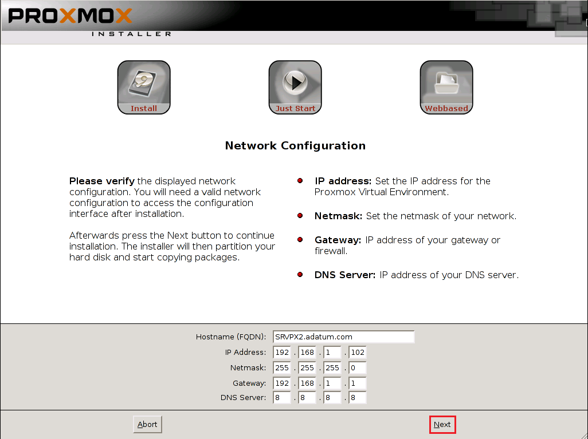

Descargamos la ISO de la última versión de PROXMOX desde la pagina oficial de PROXMOX, actualmente es la Proxmox VE 5.0 ISO Installer.
Una vez tengamos la ISO, usamos la herramienta de Ubuntu “Creador de discos de arranque” para montar dicha ISO en algun PenDrive o CD.
Una vez lo tenemos todo listo, tenemos que meter el PenDrive o CD en nuestro servidor y arrancar desde nuestro dispositivo con la ISO montada
Cuando arrancamos se nos muestra una primera pantalla que se queda esperando hasta que le demos a Intro.
Le damos a enter y esperamos a que nos carge la siguiente pantalla en la que nos pregunta si aceptamos los acuerdo de licencia. Le decimos que sí para continuar.
Lo siguiente que nos pregunta es donde queremos instalar Proxmox. Como tenemos solamente un disco pues no nos deja escoger nada más que ese
Le damos a Next, y lo que nos pregunta a continuación es: El País, la zona horaria y el idioma del teclado
Lo siguiente que nos pide es una contraseña para el usuario root, que será con la que nos vamos a validar, también nos pide una dirección de correo que es para cuando el servidor tenga un fallo se nos pueda notificar por correo.
Le damos a Next y lo siguiente que tenemos que rellenar es:
FQDN (Fully Qualified Domain Name): Es el nombre completo de la máquina es decir el nombre + dominio al que pertenece.
Dirección IP: Si en la red que estamos hay un servidor DHCP la IP se asignará automáticamente, si nos gusta esa dirección la dejamos tal cual, o si queremos cambiarla la podemos hacer siempre y cuando pertenezca a la misma red en la que nos encontramos.
Máscara: Una acorde a nuestra red.
Gateway: La dirección por donde saldremos a Internet.
Servidor DNS: Es importante que tengamos salida a Internet para poder hacer una actualización por lo menos la primera vez después de instalarlo, ya que dependiendo de la fecha que descarguemos el software se habrán hecho mejoras que sería bueno tenerla actualizadas, más que nada por seguridad.

Una vez rellenados los campos anteriores, le damos a Next y esperamos a que se nos instale. Si ya ha terminado de hacer la instalación. Enhorabuena ya tienes un servidor Proxmox. Ahora sólo queda reiniciar el servidor.
Al reiniciarse la máquina nos encontramos con una consola en la que nos tenemos que logear con el usuario root y la contraseña que le dimos en la instalación. También podemos darnos cuenta que nos muestra la dirección del servidor web con el que nos podemos conectar desde un navegador para poder hacer las configuraciones de una forma más amigable.